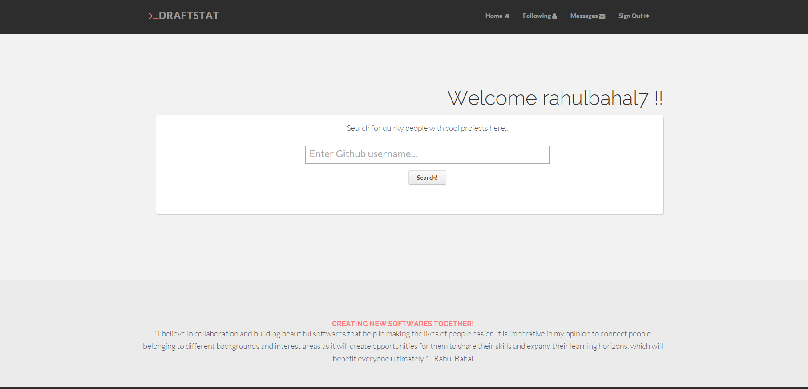

After successfully logging in / registering on the application, the user is redirected to the home page of the web application. The Home Page consists of the follwoing:

Search Text Field - Here the user can enter a github username to perform a search for Github users
Navigation to Following Page - The "Following" page will be displayed
Navigation to Messages - The user can view his/her messages in their Messages inbox
Sign Out - The user is logged out and is taken back to the landing page of the web application